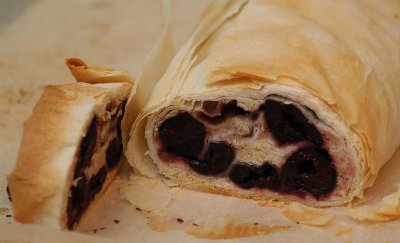

| Zutaten: | |
| 400 g | Kirschen |
| 20 g | Puderzucker |
| 20 g | Zucker |
| 30 g | Mehl |
| 10 | Butter |
| 1 | Eiweiss |
| 1 | Eigelb |
| 1 EL | Kirschwasser |
| Zimt | |
| 2 | Strudelblätter, gezogen |
Eigelb, Staubzucker und Zimt schaumig rühren.
Den mit Zucker geschlagenen Schnee in die Masse unterheben,
Mehl sowie Kirschwasser einrühren.
Mit dieser Masse den gezogenen Strudelteig zur Hälfte bestreichen, darauf gewaschene und gut abgetropfte Kirschen gleichmässig verteilen, den Strudel einrollen, sofort mit Fett bestreichen.
Bei 200°C ca. 35 Minuten backen.
Herbert Eigenmann, Code: KSD
Insgesamt eher enttäuschend. Das wird ein mini-munzel Strudelchen und so besonders toll schmeckt er auch nicht. Ist OK aber mehr nicht. RE 18.1.2010
@LINKBACK_TAG@ @WAKELOCK@